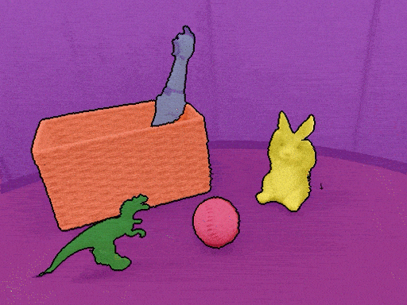
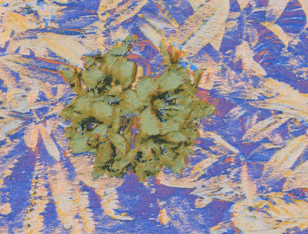

Generative Vision Researcher
Kunhao Liu

I am a fourth-year Ph.D. student at Nanyang Technological University, Singapore, under the guidance of Prof. Shijian Lu. I am currently an intern at ARC Lab, Tencent, with Dr. Wenbo Hu. I was a visiting student at Max Planck Institute for Informatics with Prof. Christian Theobalt and Dr. Fangneng Zhan. My current research focus is on Generative World Models.
I’ll be on the job market for 2026/2027. Feel free to reach out if you’re interested.
News
- 2025 Feb 🐧 Join Tencent at ARC Lab.
- 2024 Sep 👺 Two papers are accepted to SIGGRAPH Asia 2024 and WACV 2025 respectively.
- 2024 Jun 🚞 Serve as a program committee member in Neural Rendering Intelligence.
- 2023 Sep 😌 Two papers are accepted to NeurIPS 2023 and ICCV 2023 respectively.
- 2023 Jun 🍁 Serve as a program committee member in Generative Models for Computer Vision.
- 2023 Feb ☺️ One paper is accepted to CVPR 2023.
- 2022 Aug ✨ Join NTU at Visual Intelligence Lab!
Selected Publications
For the full list, please visit my Google Scholar.
-
-

-

-

-
 -
